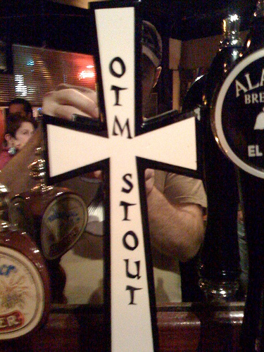

2008 Week 41 in Review
October 5 to October 11, 2008
An update on the Duwamish
The air compressor rebuild on the Duwamish is finally nearing completion. This week, I made two valves, and I hope to finish up the work next week.
An update on the Shenandoah
The Harbor History Museum that now owns the Atlas-Imperial I used to work on at Bates also owns the Shenandoah, a local purse seiner. They just moved it into its new display building and the News Tribune reported on it here.
A few months ago, they were considering putting the Atlas into the Shenndoah, since it's an appropriate engine for that time and purpose, but the news article didn't talk about that. Maybe it's time for a visit to Gig Harbor...
A visit to Commercial Sales in Fife
On Wednesday, we stopped by Commercial Sales. Owner Paul Jensen collects all manner of marine and industrial stuff, from engines and machinery to books and memorabilia. They've got a showroom that looks like my favorite kind of museum, with all sorts of old neat stuff set up. I didn't have my camera with me, but the (incomplete) inventory lists on their website may give you an idea of how much stuff they have.
I also know that Paul has an Enterprise or three in the back lot, which I want to get a look at on a day when I have more time.
A visit to the Columbia River Maritime Museum
On Thursday, I headed down to Astoria and the Columbia River Maritime Museum. They have two Atlas-Imperial diesel engines: one on display in the museum's entrance, and one in the lightship Columbia, tied up outside.
The engine in the entrance is a classic three-cylinder, 75 horsepower Atlas from the fishboat (maybe a seiner?) Argo, which was built in 1928:
It was donated to the museum by a James Scarborough, and is all painted up and prominently displayed for everyone who walks inside. I really like the way it's front and center in the museum, but the display has a few problems.
First, there's some stuff that is inaccurate about how it would have looked as a working engine. The things that I've noticed are that the governor handle, the water jumpers on the air compressor and the trust bearing, and the cooling water circulator pump are gone; and the hinge on the sector gear side of the handle is broken off. There're also a few parts that are painted instead of being left bare and lubricated, specifically the spare injector tip and the pump plungers, like in this photo:
Now, I know I'm one of about five people who notices things like this, but museums strive towards accurately representing the objects they collect and exhibit, and to me it's the details that make accuracy.
Second, as I was looking at the display I heard an old guy tell his wife that he thought it was a steam engine. There was a little sign at the corner of the display that had two sentences about how it was a diesel engine removed from a fishboat, but I saw a lot of people just stop to look at the engine and not notice the sign. Now, I don't need a big sign that says "DIESEL," but I think that the difference between steam and diesel engines is pretty important for explaining how maritime industry changed in the 1920s and '30s.
Third, the engine is currently displayed in front of a blank wall in classic white-box gallery style:
It even has a little tombstone label off to the right side. This kind of a display is great to show off paintings or sculpture, but engines are part of a much larger system. I would really like to see the Atlas put into more of a thematic display, maybe using a life-sized picture of an engine room or something to put it in context. Maybe it should even have a statue of an engineer with an oil can, just to show some of the differences between the old heavy-duties and the modern high-speeds.
Now, to be fair, I've been corresponding with curator David at the museum, and he's interested in talking about some of the things I've brought up here. My trips to Astoria keep happening when he's out of the office, though, so we haven't had an in-person meeting yet. Next time, maybe.
The museum also has the Lightship WAL 604 Columbia:
It's powered with a 550 horsepower direct-reversible Atlas-Imperial. I was really disappointed that the engine room is completely inaccessible, though. If I stood on my tip-toes and leaned over, I could just see a corner of the Atlas through an engine room window, but it was locked up tight and I couldn't find anyone with a key (I asked the guy taking tickets and then called a few people). This is unfortunate, since it's one of only a couple hundred Atlas-Imperials in the world and no one can see it. I hope at some point the museum will have the chance to incorporate the engine room into their lightship tour, because it represents a large part of the job of any ship.
Overall, though, I had a great time at the museum. This is the second time I've visited and I really think they are doing well (they have lots of visitors). I only point out this picky stuff because it's my job and I think that they will benefit from the suggestions.
A cameo by the Ready
Also in Astoria, I saw the movie Get Smart at the Colombian (they serve beer upstairs!). In the middle of the movie, the characters are suddenly on the Ready, the tug in Long Beach (it's for sale). It was great, and I hope to see more old tugs in the movies.
The Tugboat Bar
When we got to Portland, we went to the Tugboat Brewing Company, just because it had a tugboat on its sign. When we inside, though, we found that they brew OTM beer!
